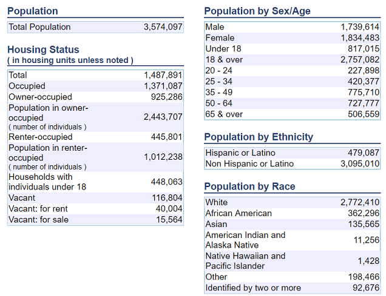

Patrick Poon
May 25, 2018
Most people...the interaction that they're going to have with a police officer is because [...] they're stopped for speeding. Or, forgetting to turn their blinker off.[1]
-- Cheryl Phillips, Journalism Professor at Stanford University
On a typical day in the United States, police officers make more than 50,000 traffic stops.[2] In recent years, there have been numerous incidents that have made national headlines that involved an officer shooting and, in some cases, killing the driver or an occupant. Many cite racial biases against Blacks and Hispanics for the disproportionate number of such incidents. Here are some relevant articles:
This Capstone project will not attempt to prove or disprove this controversial topic, and will attempt to avoid making any controversial or provocative statements on either side of the conversation.
Instead, this project aims to create a multi-class classifier that takes various discrete traffic stop situational values to predict the outcome of a traffic stop, specifically in the state of Connecticut (CT). Given a driver's age, gender, race, traffic stop violation, and the county in which a traffic stop occurs, can we reliably predict whether the traffic stop will result in a verbal/written warning, a ticket, a summons to appear in court, or an arrest?
To accomplish this task, I will parse and process traffic stop data for the state of Connecticut, and feed it into a supervised learning algorithm that I will train and tune to predict these outcomes. The data comes from the Stanford Open Policing Project (SOPP) at https://openpolicing.stanford.edu/data/. SOPP has collected data for 31 states, but the CT dataset was the cleanest and most consistent.
For this project, I will use
accuracy classification score
as my evaluation metric. According to the scikit-learn page for the
accuracy_score
function[3], in the context of multiclass classification, the function is equivalent to the
jaccard_similarity_score
function which calculates the Jaccard index[4], also known as "Intersection over Union," as illustrated in the following formula:
In this section, I will break down and decompose the raw data into its basic elements. In doing so, I will attempt to gain insights that may guide me at different points in my journey to develop an effective and accurate classifier. I will start by presenting some sample records, then discuss why certain columns should be dropped, and finally explore characteristics of some columns that may provide predictive power for my classifier.
from datetime import datetime
import itertools
import humanize
import matplotlib.pyplot as plt
import numpy as np
import pandas as pd
from IPython.display import display, Math, Latex
from sklearn.metrics import confusion_matrix, precision_recall_fscore_support
from tabulate import tabulate
%matplotlib inline
df = pd.read_csv('./data/CT-clean.csv', header=0)
/home/pato/anaconda2/envs/py36/lib/python3.6/site-packages/IPython/core/interactiveshell.py:2698: DtypeWarning: Columns (22) have mixed types. Specify dtype option on import or set low_memory=False.
interactivity=interactivity, compiler=compiler, result=result)
The raw data is available at https://stacks.stanford.edu/file/druid:py883nd2578/CT-clean.csv.gz, and is comprised of 318,669 records with 24 feature columns, collected over a period of 1 year and 5 months from 2013 to 2015. A few of those columns, namely
driver_age
,
driver_race
, and
search_type
, have overlapping information as these fields have two columns with the name format of "X" and "X_raw", where the "X" values are cleaned or adjusted "X_raw" values.
Here are a few sample rows with the feature columns broken down into three sections ( Please note : Different rows have been selected for each section to provide a sense of the complexity involved with the different columns in this dataset):
df.shape
(318669, 24)
df.iloc[:,:8].head()
| id | state | stop_date | stop_time | location_raw | county_name | county_fips | fine_grained_location | |
|---|---|---|---|---|---|---|---|---|
| 0 | CT-2013-00001 | CT | 2013-10-01 | 00:01 | westport | Fairfield County | 9001.0 | 00000 N I 95 (WESTPORT, T158) X 18 LL |
| 1 | CT-2013-00002 | CT | 2013-10-01 | 00:02 | mansfield | Tolland County | 9013.0 | rte 195 storrs |
| 2 | CT-2013-00003 | CT | 2013-10-01 | 00:07 | franklin | New London County | 9011.0 | Rt 32/whippoorwill |
| 3 | CT-2013-00004 | CT | 2013-10-01 | 00:10 | danbury | Fairfield County | 9001.0 | I-84 |
| 4 | CT-2013-00005 | CT | 2013-10-01 | 00:10 | east hartford | Hartford County | 9003.0 | 00000 W I 84 (EAST HARTFORD, T043)E.OF XT.56 |
df.iloc[24500:24506,8:16].head()
| police_department | driver_gender | driver_age_raw | driver_age | driver_race_raw | driver_race | violation_raw | violation | |
|---|---|---|---|---|---|---|---|---|
| 24500 | State Police | M | 39 | 39.0 | White | White | Speed Related | Speeding |
| 24501 | State Police | M | 62 | 62.0 | White | White | Cell Phone,Other | Cell phone,Other |
| 24502 | State Police | F | 31 | 31.0 | White | White | Registration | Registration/plates |
| 24503 | State Police | F | 50 | 50.0 | Hispanic | Hispanic | Other | Other |
| 24504 | State Police | M | 28 | 28.0 | White | White | Registration | Registration/plates |
df.iloc[242:248,16:24].head()
| search_conducted | search_type_raw | search_type | contraband_found | stop_outcome | is_arrested | officer_id | stop_duration | |
|---|---|---|---|---|---|---|---|---|
| 242 | False | NaN | NaN | False | Verbal Warning | False | 1000002364 | 1-15 min |
| 243 | False | NaN | NaN | False | Ticket | False | 1000001904 | 16-30 min |
| 244 | False | NaN | NaN | False | Summons | False | 41354688 | 1-15 min |
| 245 | False | NaN | NaN | False | Written Warning | False | 348145142 | 1-15 min |
| 246 | False | NaN | NaN | False | Ticket | False | 1000001914 | 1-15 min |
#df.info()
The dataset is primarily comprised of discrete categorical values with only three columns that contain numerical data, namely
driver_age
,
driver_age_raw
, and
county_fips
. However,
county_fips
is unlikely to yield any predictive benefit numerically as the values are simple label identifiers for values in the
county_name
column. The
county_fips
column can be dropped, and the
county_name
column will be one-hot encoded. The
driver_age
column can also be dropped as it duplicates information in the
driver_age_raw
column.
driver_age
also has missing values, as the following table shows:
df.isnull().sum().to_frame('null values count')
| null values count | |
|---|---|
| id | 0 |
| state | 0 |
| stop_date | 0 |
| stop_time | 222 |
| location_raw | 41 |
| county_name | 42 |
| county_fips | 42 |
| fine_grained_location | 1663 |
| police_department | 0 |
| driver_gender | 0 |
| driver_age_raw | 0 |
| driver_age | 274 |
| driver_race_raw | 0 |
| driver_race | 0 |
| violation_raw | 0 |
| violation | 0 |
| search_conducted | 0 |
| search_type_raw | 313823 |
| search_type | 313823 |
| contraband_found | 0 |
| stop_outcome | 5356 |
| is_arrested | 5356 |
| officer_id | 0 |
| stop_duration | 0 |
One glaring observation with this table is that the
search_type_raw
and
search_type
columns mostly contain null values and should be dropped. These fields provide supplementary information when a search is conducted, with both columns containing one of the following values: "Consent", "Other", "Inventory", or
nan
(not a number). The
search_conducted
boolean column, by itself, should provide an adequate signal about a probable outcome when a car search is involved.
The next two columns that have the highest number of null values are
stop_outcome
and
is_arrested
. The
is_arrested
column should be dropped, because "Arrest" is one of the outcome values, and keeping this column would defeat the purpose of creating this classifier. It would also be cheating in a sense. Next, the rows that contain null values for
stop_outcome
should be dropped, since the main objective of this project is to predict the outcome of a traffic stop. It would not make sense to replace the null values for this field with a median or average value.
There are a few other columns that make sense to drop as well:
-
id
column values, like "CT-2013-00001", provide no predictive value.
-
state
and
police_department
columns only have one value each, "CT" and "State Police" respectively.
-
location_raw
contains the specific city in which a traffic stop occurred. But, this data may be too granular, and better insight might be gained by using the
county_name
instead.
-
fine_grained_location
values are inconsistent and non-standardized, as the values appear to be simple notes that the officer took about the spot where the traffic stop was conducted.
-
driver_race_raw
column duplicates data in the
driver_race
column.
-
officer_id
has 2,105 unique values and might be too granular, making overfitting likely, so it will be dropped.
One could make a case that
location_raw
and/or
officer_id
should be kept. Even though these fields contain granular data that may be too specific to the point that it may contribute to overfitting, they may provide signals for certain biases that lead to certain outcomes. For example, certain officers may have a propensity to issue a
Verbal Warning
to certain demographics instead of issuing a
Ticket
. If my classifier's prediction accuracy seems to reach a ceiling during model development and exhaustive hyperparameter tuning, I will consider adding one or both of these columns back into the training data.
In the following sub-sections I will discuss the columns that comprise the input features that will be used to train my classifier.
# Drop columns that clearly should be dropped
drop_cols = [
'county_fips',
'driver_age',
'driver_race_raw',
'fine_grained_location',
'id',
'is_arrested',
'officer_id',
'police_department',
'search_type_raw',
'search_type',
'state',
]
df.drop(drop_cols, axis=1, inplace=True)
#df.shape
#df.isnull().sum().to_frame('null value count')
# Drop empty stop_outcome and county_name/county_fips rows
df.dropna(subset=['stop_outcome', 'county_name'], axis=0, inplace=True)
df.shape
df.isnull().sum()
The values from the
stop_outcome
column will serve as the output labels for my classifier. Graphing the value distribution for this column makes it clear that the data set is
highly imbalanced
.
outcome_breakdown = df['stop_outcome'].value_counts(normalize=True).mul(100).plot.bar(figsize=(15, 3), table=True, fontsize=14, title="Traffic Stop Outcome Breakdown")
outcome_breakdown.axes.get_xaxis().set_visible(False)
outcome_breakdown.axes.set_ylabel('%', fontsize=14)
outcome_breakdown.tables[0].auto_set_font_size(False)
outcome_breakdown.tables[0].set_fontsize(14)
outcome_breakdown.tables[0].scale(1, 2)

A vast majority of traffic stops result in the officer issuing a "
Ticket
" in 69.89% of the cases. "
Arrest
"s comprise only 2.33% of traffic stops. Some lucky drivers are issued warnings, verbal or written, 23.9% of the time, while a few unfortunate drivers receive a "Summons" to appear in court in 3.9% of traffic stops. There is a high risk that a trained model using this dataset unaltered will have a strong bias towards predicting "Ticket" as the outcome if not handled properly.
One interesting data point that CT officers collect is whether a search was conducted during the traffic stop, as captured in the
search_conducted
column. When True, these traffic stops should correlate with a higher number of outcomes resulting in an "Arrest".
searches = df['search_conducted'].value_counts(normalize=True).mul(100).plot.bar(figsize=(8, 2), table=True, title="Proportion of Searches Conducted Relative to All Stops")
searches.axes.get_xaxis().set_visible(False)
searches.axes.set_ylabel('%')
searches.tables[0].set_fontsize(14)
searches.tables[0].scale(1, 2)

Indeed, the proportion of Arrests rises to 27.69% of traffic stops when a search is conducted.
outcome_when_searched = df[df['search_conducted'] == True]['stop_outcome'].value_counts(normalize=True).mul(100).plot.bar(figsize=(15, 5), table=True, title="Outcomes When Vehicle Searched")
outcome_when_searched.axes.get_xaxis().set_visible(False)
outcome_when_searched.axes.set_ylabel('%')
outcome_when_searched.tables[0].auto_set_font_size(False)
outcome_when_searched.tables[0].set_fontsize(14)
outcome_when_searched.tables[0].scale(1, 2)

Still, searches only comprise 1.7% of all traffic stops, so the fact remains that the data set is highly imbalanced.
stop_duration
Another interesting data point is the duration of the traffic stop in the
stop_duration
column, which may provide another predictive signal about the likely outcome. Logically speaking, the longer the duration of a traffic stop, the more likely the outcome will be an "Arrest", as the officer may need to ask more questions, search the vehicle, conduct a sobriety test, and perform other duties that take time and extend the duration of the traffic stop.
# duration_outcomes = df.groupby(['stop_duration', 'stop_outcome'])
# duration_outcomes.agg({'id': 'count'}).groupby(level=0).apply(lambda x: 100 * x / float(x.sum())).rename(columns={'id': '%'})
duration_dummies = pd.get_dummies(df.stop_duration)
outcomes_by_duration = pd.concat([df.stop_outcome, duration_dummies], axis=1)
outcomes_by_duration_grouped = outcomes_by_duration.groupby(['stop_outcome']).agg({x: 'sum' for x in duration_dummies.columns.values}).apply(lambda x: 100 * x / float(x.sum())).T
ax = outcomes_by_duration_grouped.plot.barh(figsize=(15, 5), width=0.9, fontsize=14, title="Outcome by stop_duration")
ax.set_xlabel('%', fontsize=14)
ax.set_ylabel('Stop Duration', fontsize=14)
Text(0,0.5,'Stop Duration')

As suspected, the chances of a traffic stop resulting in an "Arrest", as illustrated by the blue bars, is much higher when the stop lasts longer than 30 minutes at 35.64% than 1.01% when the stop lasts only 15 minutes or less.
Another potential signal for the outcome of a traffic stop is race.
stops_by_race = df['driver_race'].value_counts(normalize=True).mul(100).plot.bar(figsize=(15, 4), table=True, title="Race Breakdown", fontsize=14)
stops_by_race.axes.get_xaxis().set_visible(False)
stops_by_race.axes.set_ylabel('%', fontsize=14)
stops_by_race.tables[0].set_fontsize(14)
stops_by_race.tables[0].scale(1, 2)

The barchart shows that the majority (76%) of traffic stops involved "White"s, with "Black"s at 11.75%, "Hispanic"s at 9.78%, "Asian"s at 1.87%, and a catch-all value of "Other" at 0.55%. This approximately matches the 2010 census figures for Connecticut[5], where the racial composition is 77.57% "White", 10.14% "Black", 13.4% "Hispanic", 3.79% "Asian", and roughly 5.55% "Other". Hispanics are separated out by Ethnicity, so the numbers I provided have some overlap and sum to more than 100%.

One interesting note about the "Other" value is that in the
driver_race_raw
column of the dataset, this value was denoted as "Native American" and was subsequently replaced with "Other" in the
driver_race
column.
Looking for further insights, I thought it might be interesting to analyze racial breakdown of traffic stops that resulted in an "Arrest" by county. Please note that the values are in percentages.
# df.loc[df['stop_outcome'] == 'Arrest'].groupby(['county_name', 'driver_race']).agg({'id': 'count'}).groupby(level=0).apply(lambda x: 100 * x / float(x.sum())).rename(columns={'id': '%'})
arrested = df.loc[df['stop_outcome'] == 'Arrest']
arrested_dummies = pd.get_dummies(arrested.county_name)
arrested_races_by_county = pd.concat([arrested.driver_race, arrested_dummies], axis=1)
county_races = arrested_races_by_county.groupby(['driver_race']).agg({x: 'sum' for x in arrested_dummies.columns.values}).apply(lambda x: 100 * x /float(x.sum())).T
county_races
| driver_race | Asian | Black | Hispanic | Other | White |
|---|---|---|---|---|---|
| Fairfield County | 1.007049 | 16.918429 | 28.700906 | 0.604230 | 52.769386 |
| Hartford County | 1.319797 | 23.553299 | 19.289340 | 0.507614 | 55.329949 |
| Litchfield County | 1.140065 | 3.094463 | 10.097720 | 0.325733 | 85.342020 |
| Middlesex County | 1.206897 | 12.586207 | 13.103448 | 0.000000 | 73.103448 |
| New Haven County | 0.922819 | 17.533557 | 22.315436 | 0.251678 | 58.976510 |
| New London County | 1.277235 | 8.715252 | 9.541698 | 0.450789 | 80.015026 |
| Tolland County | 1.121076 | 7.735426 | 9.865471 | 0.112108 | 81.165919 |
| Windham County | 0.698324 | 4.748603 | 17.318436 | 0.418994 | 76.815642 |
# races_by_county
county_graph = county_races.plot.barh(figsize=(15, 8), width=0.9, fontsize=14)
county_graph.axes.set_xlabel('%', fontsize=14)
Text(0.5,0,'%')

While the racial breakdown of traffic stops for the state overall are, for the most part, consistent with 2010 census data, these figures suggest that there are certain counties where Blacks and Hispanics are pulled over disproportionately higher than their composition in the 2010 census, namely in the Fairfield, Hartford, and New Haven counties. This is not to suggest that they are being pulled over because of racial bias but is simply stated as an observation.
The distribution of traffic stops by county is moderately distributed. Almost half of traffic stops occurred in New Haven, New London, and Tolland counties.
outcomes_by_county = df['county_name'].value_counts(normalize=True).mul(100).apply(lambda x: float('{:.6f}'.format(x))).plot.bar(figsize=(15, 5), table=True, fontsize=12, title="Traffic Stops by County")
outcomes_by_county.axes.get_xaxis().set_visible(False)
outcomes_by_county.axes.set_ylabel('%', fontsize=18)
outcomes_by_county.tables[0].auto_set_font_size(False)
outcomes_by_county.tables[0].set_fontsize(10)
outcomes_by_county.tables[0].scale(1, 3)

Two columns,
violation
and
violations_raw
, provide information about the related violation(s) involved in a traffic stop outcome. Unfortunately, these columns suffer from repetitive values and inconsistent data entry issues. For example, some values are phrased differently yet have the same meaning. I will need to settle on a standard value for these duplicate values and perform one-hot encoding for each class value, since multiple violations can be associated with a single traffic stop.
def normalize_violation(violation):
"""Normalize violation values
"""
if violation == 'defective lights':
return 'lights'
elif violation == 'equipment violation':
return 'equipment'
elif violation == 'other/error':
return 'other'
elif violation == 'registration/plates':
return 'registration'
elif violation == 'seat belt':
return 'seatbelt'
elif violation == 'speed related':
return 'speeding'
elif violation == 'stop sign/light' or violation == 'stop sign':
return 'bad_stop'
return violation.replace(' ', '_')
def merge_violations(violations):
"""Merge violation and violation_raw columns
"""
merged = []
tokens = violations.lower().split(',')
return list(set([normalize_violation(violation) for violation in tokens]))
def onehot_encode_violations(arr_violations):
row = np.zeros(len(violations))
for v in arr_violations:
row[violations.index(v)] = 1
return row
violations = []
for violation in list(df.violation.unique()) + list(df.violation_raw.unique()):
tokens = violation.lower().split(',')
violations.extend([normalize_violation(token) for token in tokens])
violations = sorted(set(violations))
merged = df[['violation_raw', 'violation']].apply(lambda x: ','.join(x), axis=1).apply(merge_violations)
violation_col_headers = ['violation_{}'.format(violation.replace(' ', '_')) for violation in violations]
df_violations = merged.apply(onehot_encode_violations).apply(lambda x: pd.Series(x, dtype=int))
df_violations.columns = violation_col_headers
The distribution of violation values shows that a majority of traffic stops involve speeding. Unfortunately, "Other" represents a large portion of violations, which is not descriptive and may add noise to the training set.
violations = df_violations.copy(deep=True)
violations.columns = [x.replace('violation_', '') for x in violations.columns.values]
violation_breakdown = violations.sum().sort_values(ascending=False).plot.bar(figsize=(17, 5), fontsize=14)
violation_breakdown.axes.set_ylabel('Number of traffic stops', fontsize=14)
<matplotlib.text.Text at 0x22817a8d8d0>

The bar chart below shows the outcome percentages by violation type.
violation_outcomes = pd.concat([df.stop_outcome, df_violations], axis=1)
agg_dict = {}
outcomes_counts_by_violation = violation_outcomes.groupby(['stop_outcome']).agg({x: 'sum' for x in violation_col_headers}).apply(lambda x: 100 * x /float(x.sum())).rename(columns={x: x.replace('violation_','') for x in violation_col_headers}).T
outcomes_counts_by_violation_chart = outcomes_counts_by_violation.plot.barh(figsize=(15,15), width=0.9, fontsize=14)
outcomes_counts_by_violation_chart.axes.set_xlabel('%', fontsize=18)
<matplotlib.text.Text at 0x227d9fa3860>

Not surprisingly, most violations resulted in a "Ticket", but there are a few exceptions:
- Expired and suspended driver's licenses were more likely to result in a "Summons" to appear in court, as shown by the two elongated orange-colored bars.
- Improper display of license plates and non-functional lights were likely to result in a "Verbal Warning."
The
stop_date
and
stop_time
columns specify when a traffic stop occurred. In the hopes of detecting potential time patterns, I will transform these into four columns:
month
,
day
,
hour
, and
minute
.
# [TODO: REMOVEME?]
# import pandas as pd
# %matplotlib inline
# df = pd.read_csv('./data/CT-clean.csv', header=0)
# day_freq = df['stop_date'].apply(lambda x: x.split('-')[2])
# month_freq = df['stop_date'].apply(lambda x: x.split('-')[1])
# dt_outcomes = pd.get_dummies(df['stop_outcome'])
# dt = pd.concat([month_freq, day_freq, df['stop_outcome']], axis=1)
# cols = ['month', 'day', 'outcome']
# # cols.extend(list(dt_outcomes.columns.values))
# dt.columns=cols
# grouped = dt.groupby(['day'])['outcome'].count().plot.barh(figsize=(15, 15), fontsize=14)
# grouped.axes.set_xlabel('outcome count', fontsize=14)
# grouped.axes.set_ylabel('day', fontsize=14)
Twice as many men got pulled over compared to women, as men comprised almost exactly two-thirds (66.5%) of this dataset.
# gender_vbar = df['driver_gender'].value_counts(normalize=True).mul(100).plot.bar(figsize=(8, 4), table=True)
# xaxis = gender_vbar.axes.get_xaxis()
# xaxis.set_visible(False)
# gender_vbar.axes.set_ylabel('%')
# table = gender_vbar.tables[0]
# table.scale(1, 2)
gender_vbar = df['driver_gender'].value_counts(normalize=True).mul(100).plot.pie(figsize=(4, 4), fontsize=16)
xaxis = gender_vbar.axes.get_xaxis()
xaxis.set_visible(False)
gender_vbar.axes.set_ylabel('')
# gender_vbar.axes.set_ylabel('%')
# table = gender_vbar.tables[0]
# table.scale(1, 2)
<matplotlib.text.Text at 0x227ee600a90>

Those in their 20's have the highest percentage of traffic stops at 30.66%, with those in their 30's and 40's following suit, at 20.9% and 18.9% respectively.
# df['driver_age_raw'].describe()
# [TODO: Remove or make a pretty table]
count 313274.000000
mean 38.066325
std 14.428419
min 0.000000
25% 26.000000
50% 35.000000
75% 49.000000
max 99.000000
Name: driver_age_raw, dtype: float64
age_bins = pd.cut(df['driver_age_raw'], bins=[0, 10, 20, 30, 40, 50, 60, 70, 80, 90, 100], include_lowest=True)
ax = age_bins.value_counts(sort=False, normalize=True).mul(100).plot.bar(rot=0, color="b", figsize=(16,4), title="Age Breakdown (10-year Bins)", fontsize=14)
ax.axes.set_ylabel('%', fontsize=14),
(Text(0,0.5,'%'),)

274 records specify ages that are less than 15 years old, which appear to be typos and will be removed in the pre-processing stage.
weird_ages_rows = df[df["driver_age_raw"] < 15]['driver_age_raw']
weird_ages = weird_ages_rows.value_counts(sort=False).plot.bar(figsize=(13, 4), table=True, title='Age Values Count')
xaxis = weird_ages.axes.get_xaxis()
xaxis.set_visible(False)
weird_ages.axes.set_ylabel('Count')
table = weird_ages.tables[0]
table.set_fontsize(14)
table.scale(1, 2)

Since this is a multi-class classification problem, I will experiment with the following algorithms that scikit-learn lists as multi-class at http://scikit-learn.org/stable/modules/multiclass.html:
| Classifier | Description |
|---|---|
| **GaussianNB** |
|
| **RandomForestClassifier** |
|
| **DecisionTreeClassifier** |
|
| **GradientBoostingClassifier** |
|
For the most part, I used the default parameters for each classifier, with the exception of the
n_jobs
,
verbose
, and
random_state
parameters when available, which are specified as follows:
| Classifier | ||||
|---|---|---|---|---|
| Parameter | GaussianNB | RandomForestClassifier | DecisionTreeClassifier | GradientBoostingClassifier |
| bootstrap | True | |||
| class_weight | None | None | ||
| criterion | gini | gini | friedman_mse | |
| init | None | |||
| learning_rate | 0.1 | |||
| loss | deviance | |||
| max_depth | None | None | 3 | |
| max_features | auto | None | None | |
| max_leaf_nodes | None | None | None | |
| min_impurity_split | 0.0000001 | 0.0000001 | 0.0000001 | |
| min_samples_leaf | 1 | 1 | 1 | |
| min_samples_split | 2 | 2 | 2 | |
| min_weight_fraction_leaf | 0 | 0 | 0 | |
| n_estimators | 10 | 100 | ||
| n_jobs | 8 | |||
| oob_score | False | best | ||
| presort | False | auto | ||
| priors | None | |||
| random_state | 0 | 0 | 0 | |
| splitter | best | |||
| subsample | 1 | |||
| verbose | 3 | 3 | ||
| warm_start | False | False | ||
After experimenting with different configurations of the dataset, I will move forward with the best performing model and tune its hyperparameters.
As far as I know, there is no external benchmark to assess the accuracy of a traffic stop outcome prediction. From my analysis of the data, generating a naive predictor that predicts the outcome to be most common value, "Ticket," should suffice as a benchmark. "Ticket" comprises ~70% of all outcomes as described in the following table:
| Outcome | Count | % |
|---|---|---|
| Arrest | 7,312 | 2.33% |
| Summons | 12,205 | 3.90% |
| Ticket | 218,973 | 69.89% |
| Verbal Warning | 47,753 | 15.24% |
| Written Warning | 27,070 | 8.64% |
| 313,313 |
To ensure that I am doing a fair comparison, I will run this model against the same test set that will be used as input to the
score()
functions of the classifiers specified above.
I performed the following preprocessing steps on the raw dataset to generate training and testing sets for classifier development:
county_fips
driver_age
driver_race_raw
fine_grained_location
id
is_arrested
location_raw
officer_id
police_department
search_type
search_type_raw
state
stop_outcome
and
county_name
had empty values, as well as rows which had
driver_age_raw
values below 15.
stop_time
field.
stop_date
and
stop_time
string values into
month
,
day
,
hour
, and
min
numerical value columns then dropped the
stop_date
and
stop_time
columns.
violation
and
violation_raw
columns, merging similar values into a common value, then manually one-hot encoded the values into their own binary columns, which were then appended to the main dataframe as additional features. I subsequently dropped the
violation
and
violation_raw
columns.
search_conducted
and
contraband_found
columns to binary values in-place.
driver_age
values to values between 0.0 and 1.0 using
sklearn.preprocessing.MinMaxScaler
in-place.
county_name
,
driver_gender
,
driver_race
,
stop_duration
.
# Append one-hot encoded violations
df = pd.concat([df, df_violations], axis=1)
# Remove records with age less than 15
df.drop(index=weird_ages_rows.index, inplace=True)
# Fill in empty **`stop_time`** with median value
populated = df[df.stop_time.notnull()]['stop_time'].sort_values()
median_stop_time = populated.iloc[populated.shape[0] // 2]
df['stop_time'].fillna(median_stop_time, inplace=True)
# df.shape
(313129, 28)
# Categorize stop_time into time-of-day: "morning, afternoon, evening, small hours"
def day_period(time_str):
hour = time_str.hour
if hour >= 0 and hour < 6:
return 'Small Hours'
elif hour >= 6 and hour < 12:
return 'Morning'
elif hour >= 12 and hour < 18:
return 'Afternoon'
else:
return 'Evening'
df['day_period'] = pd.to_datetime(df['stop_time']).apply(day_period)
# df.shape
(313129, 29)
# Categorize stop_date by season
def season(stop_date):
month = datetime.strptime(stop_date, '%Y-%m-%d').month
if month >= 3 and month < 6:
return 'Spring'
elif month >= 6 and month < 9:
return 'Summer'
elif month >= 9 and month < 12:
return 'Fall'
return 'Winter'
df['season'] = df['stop_date'].apply(season)
# Transform driver_gender to binary
df['is_male'] = df['driver_gender'].apply(lambda x: 1 if x == 'M' else 0)
# Experiment: See whether labelencoding location_raw improves performance
from sklearn.preprocessing import LabelEncoder
le = LabelEncoder()
df['location_raw'] = le.fit_transform(df['location_raw'])
# df.shape
(313129, 31)
# Drop columns no longer needed due to normalization
drop_cols = [
'driver_gender',
# 'county_name',
# 'location_raw',
# 'officer_id',
'stop_date',
'stop_time',
'violation_raw',
'violation',
]
df.drop(drop_cols, axis=1, inplace=True)
# df.shape
(313129, 26)
# Convert booleans to 0 and 1
df['search_conducted'] = df['search_conducted'].apply(lambda x: int(x))
df['contraband_found'] = df['contraband_found'].apply(lambda x: int(x))
# Normalize driver_age
from sklearn.preprocessing import MinMaxScaler
scaler = MinMaxScaler() # default=(0, 1)
features_transformed = pd.DataFrame(data=df)
features_transformed['driver_age_raw'] = scaler.fit_transform(features_transformed['driver_age_raw'].reshape(-1, 1))
# features_transformed
features_transformed.shape
(313129, 26)
features_transformed.drop_duplicates(inplace=True)
# features_transformed.shape
(277733, 26)
# Prefix officer id numbers as dtype is object and get_dummies() creates some duplicate columns
# features_transformed['officer_id'] = le.fit_transform(features_transformed['officer_id'].apply(lambda x: 'no_{}'.format(x)))
# One-hot encode categorical variables
cols_to_encode = [
# 'location_raw',
'county_name',
'driver_race',
# 'officer_id',
'stop_duration',
'day_period',
'season',
]
final_features = pd.get_dummies(features_transformed, columns=cols_to_encode)
# final_features.columns.values
array(['location_raw', 'driver_age_raw', 'search_conducted',
'contraband_found', 'stop_outcome', 'violation_bad_stop',
'violation_cell_phone', 'violation_display_of_plates',
'violation_equipment', 'violation_license', 'violation_lights',
'violation_moving_violation', 'violation_other',
'violation_registration', 'violation_safe_movement',
'violation_seatbelt', 'violation_speeding',
'violation_suspended_license', 'violation_traffic_control_signal',
'violation_window_tint', 'is_male', 'county_name_Fairfield County',
'county_name_Hartford County', 'county_name_Litchfield County',
'county_name_Middlesex County', 'county_name_New Haven County',
'county_name_New London County', 'county_name_Tolland County',
'county_name_Windham County', 'driver_race_Asian',
'driver_race_Black', 'driver_race_Hispanic', 'driver_race_Other',
'driver_race_White', 'stop_duration_1-15 min',
'stop_duration_16-30 min', 'stop_duration_30+ min',
'day_period_Afternoon', 'day_period_Evening', 'day_period_Morning',
'day_period_Small Hours', 'season_Fall', 'season_Spring',
'season_Summer', 'season_Winter'], dtype=object)
from datetime import datetime
timestamp = datetime.now().strftime('%Y%m%d%H%M%S')
non_oversampled = final_features.copy(deep=True)
non_oversampled_outcomes = non_oversampled.pop('stop_outcome')
# non_oversampled.to_pickle('./final_features-{}-non_oversampled.pkl'.format(timestamp))
# non_oversampled_outcomes.to_pickle('./labels-{}-non_oversampled.pkl'.format(timestamp))
# print('timestamp = {}'.format(timestamp))
As part of my implementation, I performed an 80/20 split of the preprocessed data into training and test sets, respectively. Feeding the training set into the selected classifiers' fit() functions and subsequently calling the resulting fitted models' score() functions with the test set achieved the following accuracy scores:
| Algorithm | Accuracy Score |
|---|---|
| ( Benchmark ) | 0.6912 |
| GaussianNB | 0.643051 |
| DecisionTreeClassifier | 0.537262 |
| RandomForestClassifier | 0.685543 |
| GradientBoostingClassifier | 0.718311 |
Only the GradientBoostingClassifier performed better than the benchmark, and only by .027111 or 2.71%. In an effort to improve performance, I tested different modifications to the data set. To make this task easier to understand and track, I created the following flags and then tested different combinations between them in different stages:
| Flag | Data Transformation Description |
|---|---|
| include_location_raw | Add **`location_raw`** column to the data set |
| include_driver_race | Add **`driver_race`** column to the data set |
| label_encode_categoricals | Use sklearn.preprocessing.LabelEncoder to encode categorical column values. If False, use pandas.get_dummies() to one-hot encode each categorical column value into its own binary value column. |
| oversample | Oversample the data to address data set imbalance |
| undersample | Undersample the data to address data set imbalance |
The process of oversampling involved calculating a multiplier for each outcome value by dividing the number of rows of the outcome with the highest row count by each of the other outcome row counts then rounding down. The non-largest outcome value rows were then replicated by their multipliers and appended to the main dataset, with the resulting dataset being shuffled prior to splitting into training and testing sets.
Undersampling
involved removing a percentage of rows that had a
stop_outcome
value of "Ticket." I experimented with different values between 1-50%, but the accuracy always decreased. Stage 5 below with the
undersampling
flag checked reflects a 1% removal of "Ticket" rows.
The accuracy score results are shown below, where the scores reflect the increase or decrease in accuracy by changing one flag (Please note that Stage 1 reflects the initial implementation results):
| STAGES | |||||||
|
FLAGS |
1 |
2 |
3 |
4 |
5 |
6 |
7 |
|
include_location_raw |
✔ |
✔ |
✔ |
✔ |
✔ |
✔ |
|
|
include_driver_race |
✔ |
✔ |
✔ |
✔ |
✔ |
||
|
label_encode_categoricals |
✔ |
✔ |
✔ |
✔ |
|||
|
oversample |
✔ |
||||||
|
undersample |
✔ |
||||||
|
CLASSIFIER SCORES |
|||||||
|
GaussianNB |
0.643051 |
0.202978 |
0.686507 |
0.685147 |
0.686523 |
0.207804 |
0.685847 |
|
DecisionTreeClassifier |
0.537262 |
0.571481 |
0.559568 |
0.567211 |
0.553123 |
0.568991 |
0.556581 |
|
RandomForestClassifier |
0.685543 |
0.70189 |
0.696357 |
0.681789 |
0.693015 |
0.702271 |
0.69653 |
|
GradientBoostingClassifier |
0.718311 |
0.724262 |
0.721336 |
0.711789 |
0.715451 |
**0.724468** |
0.721238 |
A few notable observations stand out:
1ocation_raw
field back into the dataset improves performance.
LabelEncoder()
for this use case.
driver_race
appears to increase performance slightly, so it may be an unnecessary data column for this classifier.
The results reveal the
GradientBoostingClassifier
to be the best classifier for this project, using the dataset from the stage 6 configuration. To optimize this model, I used
sklearn.model_selection.RandomizedSearchCV
to perform a randomized search of select parameters for the GradientBoostingClassifier class. RandomizedSearchCV is similar to GridSearchCV which performs an exhaustive search over specified parameter values for an estimator, using cross-validation. RandomizedSearchCV differs slightly from GridSearchCV in that, rather than searching over all specified parameter values, it performs a randomized search where each setting is sampled from a distribution over possible parameter values. As a result, RandomizedSearchCV is able to complete a search for optimal parameters values in less time than GridSearchCV with slightly less accuracy.
I chose the following list of values to search for the GradientBoostingClassifier class:
The RandomizedSearchCV class was instantiated with a dictionary of these parameters as the params_distribution input parameter along with the following input parameters:
cv
is the number of cross-folds to use for validation, and
n_iter
specifies the number of iterations. The model instance was then called with the
.fit()
method with the training dataset as its input. It is important to note that
n_iter
provides a mechanism to limit the duration for a search. The higher the number the more samplings RandomizedSearchCV performs, but the longer it will take to finish. In my case, one iteration took 38 minutes to complete.
Once RandomizedSearchCV completed its search, the optimal parameter values that were returned for the GradientBoostingClassifier class were the following:
import pickle
from sklearn.ensemble import RandomForestClassifier, GradientBoostingClassifier
X_train = pickle.load(open('./data/stage6-train.pkl', 'rb'))
y_train = X_train.pop('stop_outcome')
X_test = pickle.load(open('./data/stage6-test.pkl', 'rb'))
y_test = X_test.pop('stop_outcome')
gbc = GradientBoostingClassifier(criterion='mse', learning_rate=0.1, max_depth=5, max_features=219,
subsample=0.85, verbose=3, random_state=0)
gbc.fit(X_train, y_train)
print('{}'.format(gbc.score(X_test, y_test)))
For the final model, I instantiated GradientBoostingClassifier with these parameters, fitted the model, and got an accuracy score of 0.7288 for the stage 6 test set -- an improvement of 0.0044 or 0.44% over the non-tuned GradientBoostingClassifier instance. To compare the results with the other stages, I retrained and scored the GradientBoostingClassifier class with the optimal parameters using the dataset configurations for each of the other stages, and the results are as follows:
| STAGES | |||||||
|
FLAGS |
1 |
2 |
3 |
4 |
5 |
6 |
7 |
|
include_location_raw |
✔ |
✔ |
✔ |
✔ |
✔ |
✔ |
|
|
include_driver_race |
✔ |
✔ |
✔ |
✔ |
✔ |
||
|
label_encode_categoricals |
✔ |
✔ |
✔ |
✔ |
|||
|
oversample |
✔ |
||||||
|
undersample |
✔ |
||||||
|
CLASSIFIER SCORES |
|||||||
|
GaussianNB |
0.643051 |
0.202978 |
0.686507 |
0.685147 |
0.686523 |
0.207804 |
0.685847 |
|
DecisionTreeClassifier |
0.537262 |
0.571481 |
0.559568 |
0.567211 |
0.553123 |
0.568991 |
0.556581 |
|
RandomForestClassifier |
0.685543 |
0.70189 |
0.696357 |
0.681789 |
0.693015 |
0.702271 |
0.69653 |
|
GradientBoostingClassifier |
0.718311 |
0.724262 |
0.721336 |
0.711789 |
0.715451 |
0.724468 |
0.721238 |
|
GradientBoostingClassifier (Tuned) |
0.71882 |
0.7280679 |
0.72805 |
0.709054 |
0.70456 |
0.728882 |
0.72781 |
As the table above shows, the optimal model has the following traits:
location_raw
data column.
driver_age
data column.
# Plot training and testing results
# logfile = 'runs/201805111748-oversampled-647-run.log'
# error_results = {
# 'train': [],
# 'test': [],
# }
# with open(logfile, 'r') as f:
# for line in f:
# tokens = line.strip().split('\t')
# error_results['train'].append(float(tokens[1].split(':')[1]))
# error_results['test'].append(float(tokens[2].split(':')[1]))
# df_errors = pd.DataFrame(error_results)
# df_accuracy = df_errors.copy()
# df_accuracy_processed = df_accuracy.mul(-1).add(1)
# learning_curve = df_accuracy_processed.plot.line(title='Learning curve', figsize=(12,7))
# learning_curve.set_xlabel('Number of runs')
# learning_curve.set_ylabel('Accuracy')
The final model predicts traffic stop outcomes better than the benchmark model, but not by much. Of the actual outcomes for traffic stops in the test set, it accurately predicts their outcomes 72.89% of the time, just 3.77% better than the benchmark model which can do so 69.12% of the time.
This is encapsulated in the formula to calculate recall:
$$
\frac{T_p}{T_p+F_n}
$$
where ${T_p}$ = True Positives and ${F_n}$ = False Negatives
A confusion matrix with recall scores is provided in the next section.
Here is a horizontal barchart of the sorted feature importances from the tuned
GradientBoostingClassifier
:
# TODO: Confirm F-score is the proper y_label
gbc_tuned_df = pd.DataFrame(data=gbc.feature_importances_[:15], index=X_train.columns.values[:15])
gbc_tuned_plot = gbc_tuned_df.sort_values(by=0).plot.barh(figsize=(15, 10), fontsize=14)
gbc_tuned_plot.axes.legend().set_visible(False)
gbc_tuned_plot.set_title('Feature Importance Ranked', fontsize=14)
gbc_tuned_plot.axes.set_xlabel('Relative ranking score that sums to 1.0', fontsize=14)
gbc_tuned_plot.axes.set_ylabel('Features', fontsize=14)
Text(0,0.5,'Features')

The chart indicates that the
hour
of the day and the
age
of the driver are the most important features used in predicting the outcome of a traffic stop in our dataset. However, this is likely to be an inaccurate reflection of feature importance, as the top 5 ranked features are the only numerical data columns in the training set, and the remaining columns are binary value columns from features that were one-hot encoded from categorical data columns. In the stages that used
LabelEncoder()
to enumerate categorical values in-place, the top ranked feature was
location_raw
which suggests that the
city
in which a driver is stopped has a strong influence on the outcome.
Perhaps, we could gain better insight by analyzing the confusion matrix for our test set. The following plot illustrates the accuracy (recall) scores of this classifier, with darker cells signifying higher recall:
classes = ['Arrest', 'Summons', 'Ticket', 'Verbal Warning', 'Written Warning']
# cm = pd.DataFrame(data=confusion_matrix(y_test, gbc.predict(X_test)), columns=classes, index=classes)
cm = confusion_matrix(y_test, gbc.predict(X_test))
cm = cm.astype('float') / cm.sum(axis=1)[:, np.newaxis]
np.set_printoptions(precision=4)
plt.figure(figsize=(10, 10))
plt.imshow(cm, interpolation='nearest', cmap=plt.cm.Blues)
plt.title('Confusion Matrix (Accuracy Scores)', fontsize=14)
plt.colorbar()
tick_marks = np.arange(len(classes))
plt.xticks(tick_marks, classes, rotation=45, fontsize=14)
plt.yticks(tick_marks, classes, fontsize=14)
fmt = '.4f'
thresh = cm.max() / 2.
for i, j in itertools.product(range(cm.shape[0]), range(cm.shape[1])):
plt.text(j, i, format(cm[i, j], fmt),
horizontalalignment="center",
fontsize=14,
color="white" if cm[i, j] > thresh else "black")
plt.tight_layout()
plt.ylabel('Actual Outcome', fontsize=14)
plt.xlabel('Predicted Outcome', fontsize=14)
plt.show()

#precision_recall_fscore_support(y_test, gbc.predict(X_test), average=None)
The only outcome that this classifier is able to predict accurately is "Ticket" with a recall score of 0.9558, which means that out of all of the traffic stops that actually resulted in a "Ticket," this classifier correctly predicted an outcome to be a "Ticket" 95.58% of the time. The next most accurate outcome is "Arrest" at 35.80% recall. The least accurate is "Written Warning" at 12.25%. Intuitively, this may make sense, as the criteria as to what leads to a "Ticket" or a "Written Warning" is likely to be the same, with the probable differing determinant being the officer's discretion.
For this project, I took traffic stop data compiled from the Stanford Open Policing Project(SOPP) and created a model to predict their outcomes. After transforming the data into a form suitable to use as input to a slate of different classification algorithms, I trained the models and compared their predictive capabilities, picked the most accurate, and tuned its hyperparameters to optimize performance. The optimized model outperforms the benchmark model by only a modest margin.
I had hoped to achieve accuracy greater than 90%, but after extensive testing and experimentation on the dataset and different algorithms (including some not detailed in this report), I do not believe it is achievable with the given dataset. The number and quality of features may be insufficient. It may be possible that data for other states might provide better feature signals, but the nature of the problem may be a problem itself. The factors that influence the outcome of a traffic stop may depend on more than the features that were available in this dataset.
I found a few aspects of this project to be challenging:
officer_id
field. With 2,105 unique values, this field could not be one-hot encoded nor encoded with the
sklearn.preprocessing.LabelEncoder
.
Finally, the model is unlikely to be practical as a predictor of traffic stop outcomes. It does marginally better than just guessing that the outcome will be "Ticket." The data shows that most outcomes are speeding tickets. Arrests are rare, at least in the state of Connecticut.
It may be possible to increase accuracy by finding ways to incorporate the
officer_id
field. I suspect that increased hardware RAM might make it possible, but there is also the risk that any model created with such granular data might be more prone to overfitting. But, incorporating this field might reveal and incorporate biases of certain officers into our model which might improve accuracy. Other than that, I am unaware of any other ways to improve this model's accuracy. Perhaps, if SOPP collects additional features in the future, better accuracy can be achieved.
Although I did not detail my experiments with GPU-leveraging algorithms, I did try out
XGBoost
with my GPU, but found that accuracy was no better than
GradientBoostingClassifier
. Further, some believe that
Light GBM
has slightly better accuracy and is more performant than XGBoost as it splits its trees leaf-wise, instead of level-wise like XGBoost does, but I did not experiment with it. I do not have much hope that it would do much better than the results I achieved with
GradientBoostingClassifier
.
[1] Cheryl Phillips, Journalism Professor at Stanford University, interview. Stanford Open Policing Project (July 17, 2007).
Retrieved from https://youtu.be/iwOWcuFjNfw?t=4s.
[2] Stanford Open Policing Project (https://openpolicing.stanford.edu/)
[3] scikit-learn web pag for sklearn.metrics.accuracy_score: http://scikit-learn.org/stable/modules/generated/sklearn.metrics.accuracy_score.html.
[4] Wikipedia entry for Jaccard index: https://en.wikipedia.org/wiki/Jaccard_index]
[5] 2010 Census: [Connecticut] Apportionment Data Map: https://www.census.gov/2010census/popmap/ipmtext.php?fl=09